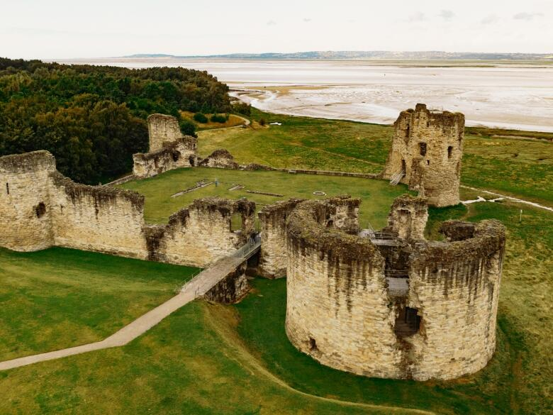
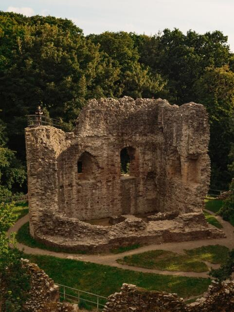

Castles and Culture
Flint Castle was the first of many to be built by KIng Edward I in a chain of castles which were erected to encircle North Wales. Ruined sine the end of the English Civil War in 1647, it remains a majestic and dramatic sight perched as it is on the edge of the Dee Estuary.
St Winefride's Well is one of the oldest Natural Assest in Flintshire. Legend has it that a spring erupted on the shpot where an unwanted suitor, Caradog, cut off Winefride's head when she spurned his advance. It has continued to be a place of pilgrimage and healing since the 7th century.
Clwyd Theatr Cymru, in Mold, is the leading production theatre in Wales with an international reputation for it's artistic achievements.
 